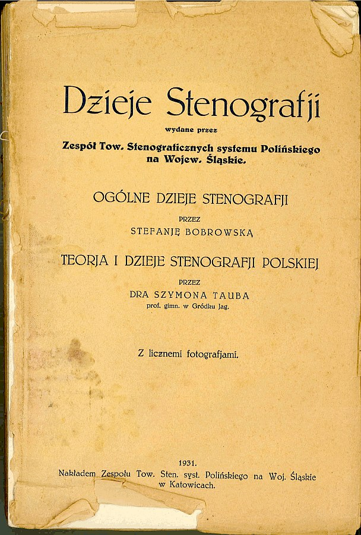

International
InternationalNowy rok szkolny - nowy start.
2012-09-03 | autor: flamenco108Witajcie po przerwie, kochani Czytelnicy (i Czytelniczki, o ile któraś z Pań nie chce się zaliczać do Czytelników)!
Dałem sobie na luz, bo wraz ze zbliżającymi się wakacjami zaczęło mnie ogarniać zmęczenie materiału. Ponad pół roku skanowania białych kruków, towarzystwo skanera, starych książek, próba utrzymania w tym jakiegoś porządku - odbiło się to na moim zdrowiu psychicznym w postaci ogarniającego umysłowość spleenu. Dwa miesiące przerwy od blogowania, od prowadzenia strony www, jak sądzę, dobrze mi zrobiło.
Za to teraz mam kupę materiału, którym zamierzam się z Wami stopniowo dzielić, w miarę, jak będę sklejał poszczególne książki lub czasopisma we w miarę estetyczne PeDeeFy. Wierzcie mi, choć historia, skąd to wszystko wziąłem, jest nie do wiary…
Mam nadzieję, że po takim prezencie wybaczycie mi kilkumiesięczne milczenie. Naprawdę musiałem odpocząć.
Ale przecież nie zapomniałem o Was! I dlatego zaczynam z grubej rury, jako że przerwa była długa i z pewnością po mnie płaczecie rzewnymi łzami (łzyma? Jeśli po jednej z każdego oka?):
Otóż na zachętę zapraszam do lektury absolutnego hiciora, czyli

Dzieje Stenografji autorstwa Szymona Tauba i Stefanii Bobrowskiej
KROPKA.
Dzieło ogromne, przynajmniej objętościowo. Dla mnie podstawowe ongi źródło informacji na ten temat, czyli historii stenografii - przede wszystkim polskiej. Część dotycząca historii stenografii światowej spokojnie może zostać uzupełniona, podobnie jak dzieje stenografii polskiej po roku 1930, czego się już ta książka nie tyczy z oczywistych powodów, skoro wydana została w roku 1931.
Zwrócić pragnę uwagę Kochanych Czytelników na styl, tj. język książki, wyrażony przez ortografię, interpunkcję i stylistykę. Mnie jako żywo kojarzy się z zapisem stenograficznym. Nie jestem specjalistą od ortografii przedwojennej, ale sądzę, że książka aż roi się od pseudo-błędów ortograficznych polegających np. na sklejeniu często obok siebie występujących wyrazów, np. nie ma, czyli w wypadku autorów: niema…
Ale przecież jest! Zachęcam do lektury.
Smacznego!
2012-09-03 autor: flamenco108